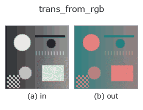

color op• Data kinds: color → color
• Call: fullseye.apply(img, "trans_from_rgb", a=0.5, b=0.5) (2-D model = एक image + दो scalar knobs a,b∈[0,1])
• HALCON समकक्ष: trans_from_rgb (अर्थ और parameters समझने के लिए HALCON reference उपयोगी है)

*Figure synthetic 128×128 input पर सच में चलाकर मिला output है। बाईं ओर input, दाईं ओर output। Point clouds ऊपर से देखे गए scatter के रूप में (brightness = z), 1-D series line के रूप में, volumes z दिशा में maximum-intensity projection के रूप में, videos बीच के frame के रूप में, complex images amplitude के रूप में, और जो return values चित्र नहीं बन सकते वे स्वयं values के रूप में दिखाए जाते हैं।*
Knob a को बदलकर (0.1 / 0.5 / 0.9, दूसरा knob default पर):
▸ trans_from_rgb: knob a को बदलने का figure (docs site)
*Knob b output नहीं बदलता (मापा गया: 0.1 / 0.5 / 0.9 पर एक जैसा)।*
Stages (पहले आने वाले ops → यह op, बाएँ से क्रम में):
▸ trans_from_rgb: stages का figure (docs site)
दूसरी images पर भी (synthetic scene / photo / coins। ऊपर की row में inputs, नीचे की row में उनके outputs। Knobs default पर):
▸ trans_from_rgb: दूसरी images पर output (docs site)
RGB image को दूसरे colour space (HSV / Lab / YUV / XYZ) में बदलता है। HALCON के trans_from_rgb (RGB colour space से किसी भी colour space में बदलना) के समकक्ष है।
अंदर से यह केवल OpenCV के cv2.cvtColor को 8bit के माध्यम से call करता है, और लक्ष्य colour space की परिभाषा स्वयं OpenCV के implementation का पालन करती है।
a लक्ष्य को 4 विकल्पों (HSV, Lab, YUV, XYZ के क्रम में) में से चुनता है (min(3, int(a * 4)))। b उपयोग नहीं होता। 8bit quantisation से गुज़रने के कारण, inverse transform (trans_to_rgb) के साथ मिलाने पर भी यह पूरी तरह उलटने योग्य (invertible) नहीं है।
• gallery2d_color_artistic family guide
• colorimetry — Colorimetry और spectra — रंग केवल spectrum × illuminant × observer से तय होता है
• Sample data catalog (DL URL / license) — 2-D के लिए skimage.data (BSD/public) + synthetic, 3-D के लिए real data sources (Stanford/PDS आदि) के DL URL।
• Operators का स्रोत और संदर्भ — इस op family के मूल research/methods के स्रोत।
• Algorithm का मानक स्रोत (लेखक, वर्ष) और उपयोग ऊपर की family usage guide में दिए गए हैं।
नीचे का program सच में चलता है, यह जाँचा गया है (figure वाला ही input)। Studio की help में यह block buttons बन जाता है, जिनसे इसे वहीं load करके चलाया जा सकता है।
cfa_to_rgb 0.50 0.50 trans_from_rgb 0.50 0.50
▸ यह pipeline load करें · Load करके चलाएँ
• gallery2d_color_artistic — py -3.11 examples/gallery2d_color_artistic.py
• poc_leaf_disease_area — py -3.11 examples/poc_leaf_disease_area.py
• poc_solder_fillet_aoi — py -3.11 examples/poc_solder_fillet_aoi.py
color को input के रूप में लेते हैं)identity · trans_to_rgb · linear_trans_color · principal_comp · rgb1_to_gray · rgb3_to_gray · access_channel · edges_color
color)cfa_to_rgb · trans_to_rgb · linear_trans_color · principal_comp · rgb1_to_gray · rgb3_to_gray · access_channel
*Provenance: ops.py — 2D operator registry. यह per-op note tools/opdocs.py md से अपने-आप generate होता है (हाथ से edit न करें)।*
© 2026 Kazufumi Furuse — Fullseye operator documentation. Licensed under Apache-2.0.